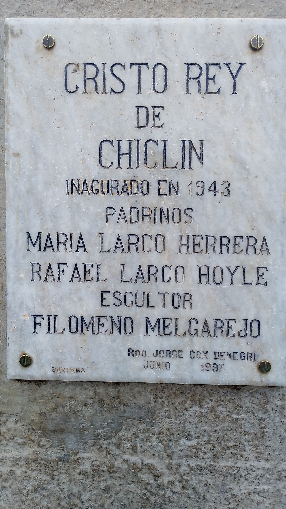
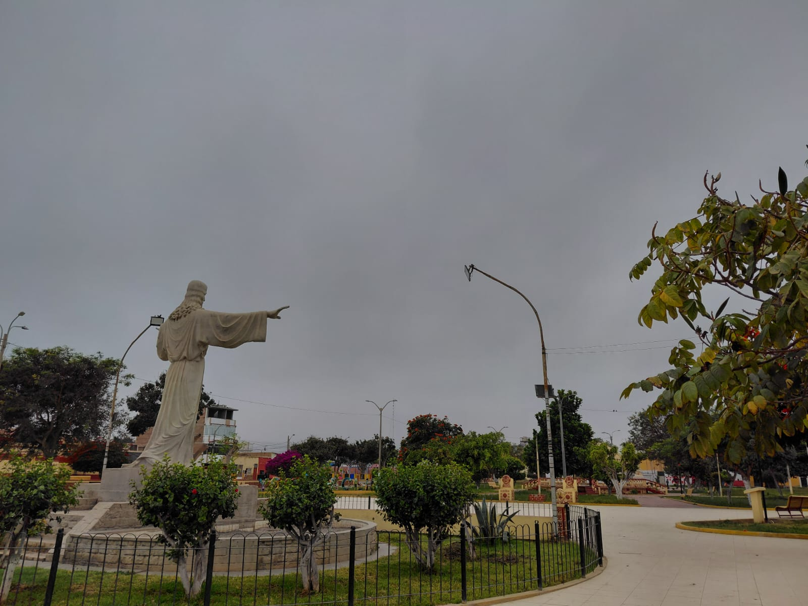
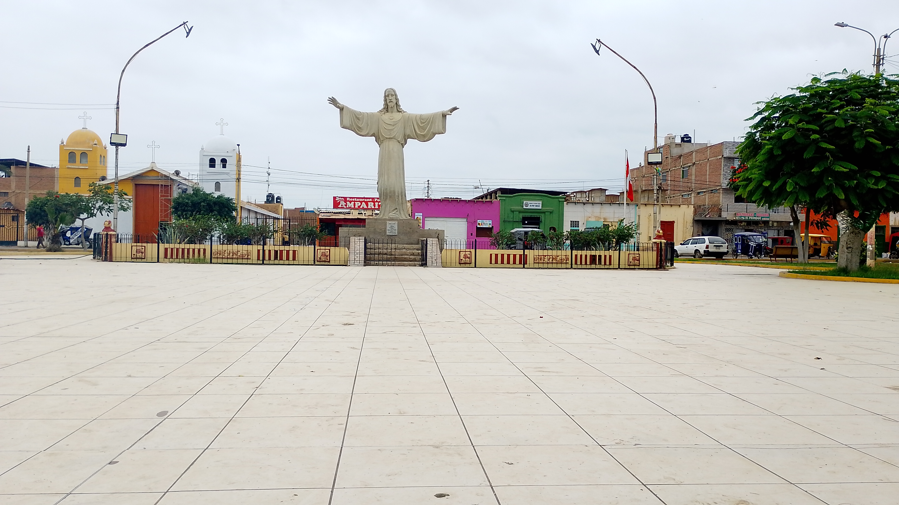
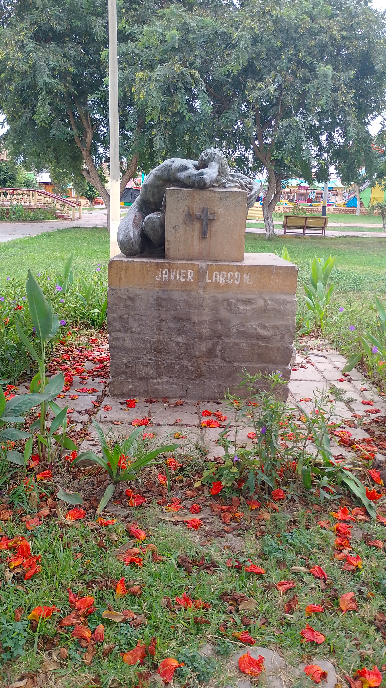
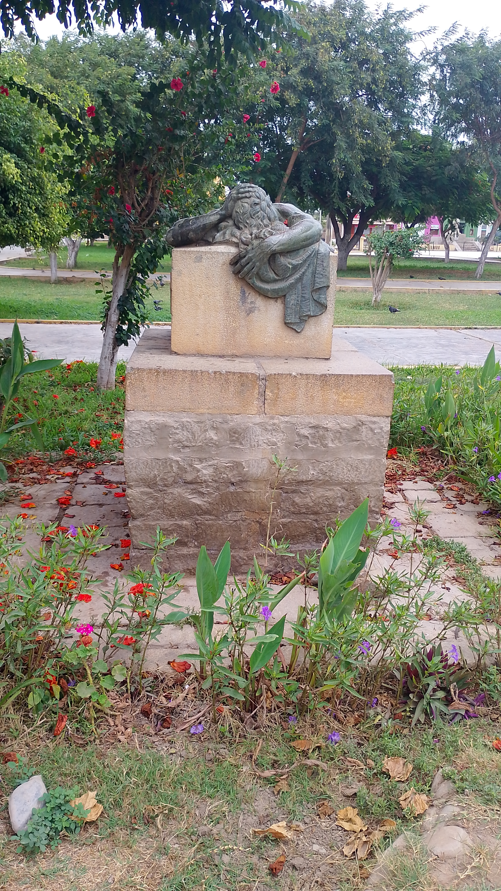
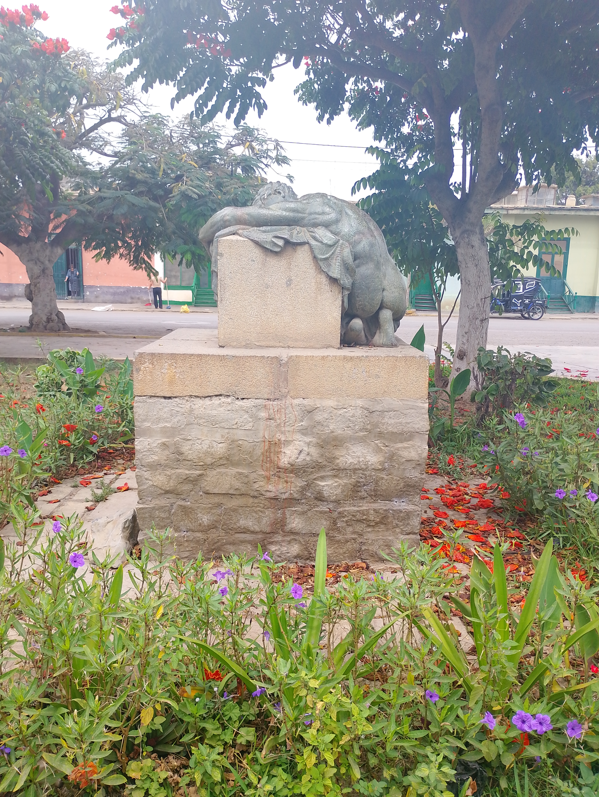

Patrimonio Cultural de Chiclín
Cristo Rey de Chiclín
Símbolo de la fe y la identidad del pueblo chiclinero



El Cristo Rey de Chiclín es el símbolo más reconocible e icónico del pueblo. Con sus brazos abiertos, domina la Plaza Mayor y representa la fe profunda de los chiclineros, siendo el centro espiritual de todas las celebraciones religiosas del valle.
Esta escultura venerada ha sido testigo de generaciones de devotos y es el punto de encuentro para la Misa de Campaña de la Fiesta Patronal del Señor de la Caña. Su importancia cultural es indiscutible como símbolo de la cristiandad en esta tierra.
Monumento al Trabajo
1926 – 2026 · Un siglo de belleza escultórica


Asentado sobre una base cúbica de mármol de Carrara, mide 4.20 m de altura y un ancho de 2 m. Representa un cuadro de desnudos de la anatomía humana, trabajada de manera clásica por el artista romano Ernesto Gazzeri, con clara influencia florentina.
La figura central representa al trabajo en actitud serena, sentado sobre un yunque con un martillo en la mano. A sus pies, una madre besando a su hijo — símbolo de la vida y el progreso. Fue inaugurado en agosto de 1926 con el nombre de "Trabajo, Progreso y Vida", erigido por la familia Larco para reconocer la lealtad de los trabajadores de la hacienda.
"Cuando los hombres se agrupan en torno a un ideal, si no inscriben en su bandera el respeto a la verdad y el culto a la justicia... la solidaridad que los liga se convierte en factor de crimen."
— Lema grabado en la base del monumento
Monumento a Javier Larco Hoyle
1948 · Bronce que guarda la memoria de un hombre ejemplar



Erigido en 1948 en la Plaza Mayor de Chiclín, este monumento de bronce honra la memoria de Javier Larco Hoyle, hijo de la familia que fundó y transformó la Hacienda Chiclín. Las escuelas chiclinenses le rendían culto anualmente con ceremonias cívicas y desfiles escolares.
La escultura representa a un hombre joven y atlético, forjado en bronce, inclinado y llorando sobre una capa de torero — la misma capa que luciera don Javier aquel día triste. Simboliza su recuerdo justo y cariñoso. Siempre trabajó para hacer de Chiclín una colectividad ejemplar, unida, virtuosa y patriota.